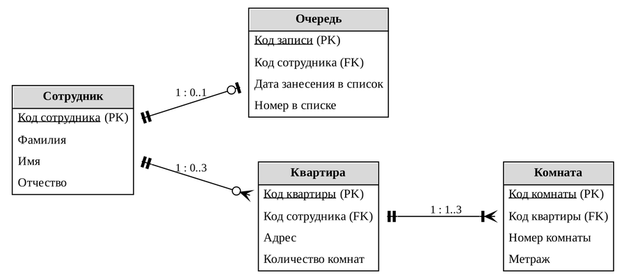
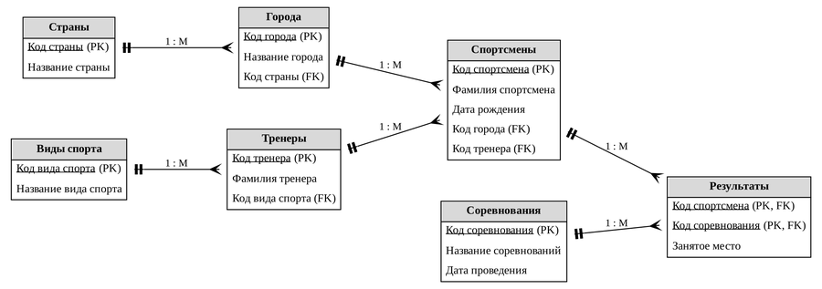
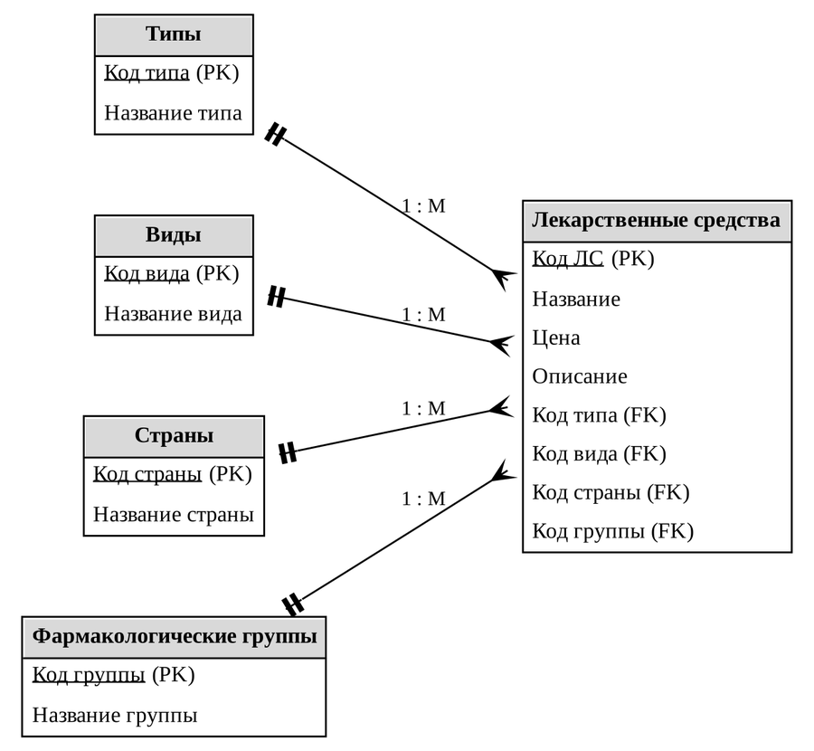

Предметная область – это часть реального мира, подлежащая изучению с целью автоматизации управления, сбора, хранения и обработки информации в базе данных.
Система управления базами данных (СУБД) – комплекс программных и языковых средств, предназначенный для создания, ведения, модификации и совместного многопользовательского доступа к базе данных.
Примеры СУБД: Microsoft SQL Server, PostgreSQL, Oracle Database, MySQL.
Классификация СУБД:
CREATE TABLE Заказчики (
[Код заказчика] INT IDENTITY(1, 2) NOT NULL,
[Название заказчика] NVARCHAR(100) NOT NULL,
[Адрес заказчика] NVARCHAR(MAX) NOT NULL,
Телефон NVARCHAR(50) NOT NULL CONSTRAINT DF_Заказчики_Телефон DEFAULT 'отсутствует',
CONSTRAINT PK_Заказчики PRIMARY KEY ([Код заказчика]),
CONSTRAINT UQ_Заказчики_Название UNIQUE ([Название заказчика]),
CONSTRAINT UQ_Заказчики_Адрес UNIQUE ([Адрес заказчика])
);Проектирование базы данных выполняется в три этапа:
Инфологическое проектирование – первый этап проектирования, на котором составляется описание предметной области, понятное как пользователю, так и разработчику, без привязки к конкретной СУБД.
Цель – выявить объекты предметной области (сущности), их свойства (атрибуты), связи между объектами и ограничения, которые накладываются на данные.
Исходные данные – описание предметной области, информационные потребности пользователей, документы организации (формы, отчеты, справочники), требования к будущей системе.
Результат – инфологическая (концептуальная) модель предметной области, чаще всего представленная в виде ER-диаграммы «сущность – связь».
Предметная область «Библиотека». Выделены сущности:
Связи: «Читатель» – «Выдача» один-ко-многим (1:М), так как читатель может взять много книг; «Книга» – «Выдача» один-ко-многим (1:М), так как один экземпляр книги может выдаваться много раз.

Рисунок 1 – ER-модель «Жилищные условия сотрудников» (нотация «вороньей лапки»)
Обоснование модели:
Атрибут «Количество квартир, владельцем которых является сотрудник» в модели не хранится, так как является вычисляемым: его можно получить подсчетом записей сущности «Квартира» для данного сотрудника. Признак «Состоит ли в списке очередников» определяется наличием записи в сущности «Очередь».
Проектирование базы данных выполняется в три этапа:
Даталогическое (логическое) проектирование – второй этап, на котором инфологическая модель преобразуется в логическую структуру базы данных с учетом модели данных выбранной СУБД (как правило, реляционной).
Цель – определить состав таблиц (отношений), их поля, первичные и внешние ключи, связи между таблицами и ограничения целостности, а также привести отношения к третьей нормальной форме.
Исходные данные – инфологическая (ER) модель, выбранная модель данных и СУБД, требования к целостности и использованию данных.
Результат – даталогическая (логическая) схема базы данных: набор нормализованных отношений с указанием атрибутов, первичных и внешних ключей и связей между ними.
Предметная область «Библиотека» (PK – первичный ключ, FK – внешний ключ):
Таблицы «Читатели» и «Книги» связаны с таблицей «Выдачи» связями один-ко-многим по полям «Номер билета» и «Шифр книги».
а) вывести договоры со сроком исполнения больше одного года:
SELECT з.[Название заказчика],
з.[Адрес заказчика],
з.Телефон,
д.[Дата оформления договора],
д.[Дата исполнения договора],
DATEDIFF(YEAR, д.[Дата оформления договора],
д.[Дата исполнения договора])
AS [Срок исполнения договора (года)]
FROM Заказчики з
INNER JOIN Договор д ON з.[Код заказчика] = д.[Код заказчика]
WHERE DATEDIFF(DAY, д.[Дата оформления договора],
д.[Дата исполнения договора]) > 365;б) вывести сведения о заказчиках, договорах и заказанной рассаде:
SELECT з.[Название заказчика],
д.[Дата оформления договора],
д.[Дата исполнения договора],
ц.[Название цветка],
зк.[Количество рассады (шт.)]
FROM Заказчики з
INNER JOIN Договор д ON з.[Код заказчика] = д.[Код заказчика]
INNER JOIN Заказ зк ON д.[Номер договора] = зк.[Номер договора]
INNER JOIN Цветы ц ON зк.[Код цветка] = ц.[Код цветка];Модель данных – совокупность структур данных, операций их обработки и ограничений целостности, которая определяет способ логической организации и представления данных в базе данных.
Реляционная модель данных.
Элементы структуры: отношение (таблица), атрибут (столбец), кортеж (строка), домен (множество допустимых значений атрибута), первичный ключ, внешний ключ, степень и мощность отношения.
Достоинства:
Недостатки:
Примеры СУБД: Microsoft SQL Server, PostgreSQL, MySQL, Oracle Database.
Допущения: спортсмен занимается одним видом спорта у одного тренера; тренер работает по одному виду спорта; каждый город относится к одной стране.
1НФ. Все атрибуты атомарны, повторяющихся групп нет. Так как спортсмен участвует во многих соревнованиях, первичный ключ составной:
2НФ. Атрибуты спортсмена (фамилия, страна, город, дата рождения, вид спорта, тренер) зависят только от части ключа – «Код спортсмена», а дата проведения – от соревнования. От всего ключа зависит только «Место». Устраняем частичные зависимости, вводим код соревнования:
3НФ. В отношении «Спортсмены» есть транзитивные зависимости: Код спортсмена → Город → Страна и Код спортсмена → Тренер → Вид спорта. Выносим их в отдельные отношения:

Рисунок 2 – Инфологическая модель «Спортсмены» (нотация «вороньей лапки»)
Обоснование: в полученных отношениях все атрибуты атомарны (1НФ), каждый неключевой атрибут полностью зависит от первичного ключа (2НФ) и не зависит транзитивно через другие неключевые атрибуты (3НФ). Это устраняет дублирование названий городов, стран, видов спорта и фамилий тренеров, а также аномалии вставки, обновления и удаления.
Реляционная модель данных – модель, в которой данные представляются в виде совокупности взаимосвязанных двумерных таблиц (отношений). Модель предложена Э. Коддом в 1970 году и основана на теории множеств и реляционной алгебре.
Домен атрибута «Количество учащихся» – множество целых положительных чисел (количество учащихся в группе). Значения, представленные в отношении: {21, 25, 26, 27, 28}.
Домен атрибута «Название отделения» – множество строк, являющихся названиями отделений колледжа. Значения, представленные в отношении: {«Банковское дело», «Правоведение»}.
Кортеж №2: (П-992; 26; Правоведение) – группа П-992 отделения «Правоведение», в которой обучается 26 учащихся.
Кортеж №5: (Д-015; 21; Банковское дело) – группа Д-015 отделения «Банковское дело», в которой обучается 21 учащийся.
Степень отношения (количество атрибутов) = 3.
Мощность отношения (количество кортежей) = 5.
Нормализация – процесс приведения отношений к нормальным формам путем пошаговой декомпозиции (разбиения) исходного отношения на несколько более простых отношений.
Основная цель нормализации – устранение избыточности (дублирования) данных и связанных с ней аномалий вставки, обновления и удаления.
Первая нормальная форма (1НФ), вторая нормальная форма (2НФ), третья нормальная форма (3НФ), нормальная форма Бойса – Кодда (НФБК), четвертая (4НФ) и пятая (5НФ) нормальные формы. На практике достаточно привести отношения к 3НФ.
Отношение находится в 1НФ, если все его атрибуты содержат только атомарные (неделимые) значения и в нем нет повторяющихся групп.
Пример: отношение Студенты (Код студента, ФИО, Телефоны), где в поле «Телефоны» хранится «111-11-11, 222-22-22», не находится в 1НФ. Для приведения к 1НФ телефоны выносятся в отдельное отношение Телефоны (Код студента, Телефон), где каждый номер хранится отдельной строкой.
Отношение находится в 2НФ, если оно находится в 1НФ и каждый неключевой атрибут полностью функционально зависит от всего первичного ключа, а не от его части. Требование актуально для отношений с составным ключом.
Пример: в отношении Оценки (Код студента, Код предмета, ФИО студента, Оценка) с ключом (Код студента, Код предмета) атрибут «ФИО студента» зависит только от «Код студента». Отношение разбивается на Студенты (Код студента, ФИО студента) и Оценки (Код студента, Код предмета, Оценка).
1НФ. Все атрибуты атомарны, добавляем первичный ключ:
2НФ. Первичный ключ простой (Код ЛС), поэтому частичных зависимостей нет – отношение находится во 2НФ.
3НФ. Атрибуты «Тип», «Вид», «Страна производства» и «Фармакологическая группа» имеют ограниченный набор значений, которые многократно повторяются у разных лекарств и описывают самостоятельные объекты (справочники). Хранение их в виде текста приводит к избыточности и аномалиям обновления (например, при переименовании группы нужно изменить множество строк). Выносим их в отдельные отношения и связываем внешними ключами:

Рисунок 3 – Инфологическая модель «Лекарственные средства» (нотация «вороньей лапки»)
Обоснование: каждое отношение содержит атомарные значения (1НФ), все неключевые атрибуты полностью зависят от простого первичного ключа (2НФ), транзитивные зависимости отсутствуют – справочные данные хранятся один раз (3НФ). Все связи справочников с таблицей «Лекарственные средства» – один-ко-многим.
Потенциальный ключ – атрибут или минимальный набор атрибутов, значения которого однозначно идентифицируют каждый кортеж отношения. В отношении может быть несколько потенциальных ключей (например, «Код студента» и «Номер паспорта»).
Первичный ключ – один из потенциальных ключей, выбранный для идентификации кортежей отношения. Его значения уникальны и не могут быть пустыми (NULL).
Внешний ключ – атрибут (набор атрибутов) отношения, значения которого соответствуют значениям первичного ключа другого (связанного) отношения. Служит для организации связей между таблицами и поддержки ссылочной целостности.
Отношение находится в 3НФ, если оно находится во 2НФ и в нем отсутствуют транзитивные зависимости, то есть ни один неключевой атрибут не зависит от первичного ключа через другой неключевой атрибут.
Основной способ приведения к 3НФ – декомпозиция: транзитивно зависимые атрибуты выносятся в новое отношение вместе с атрибутом, от которого они зависят, а в исходном отношении этот атрибут остается как внешний ключ.
Пример: Сотрудники (Код сотрудника, ФИО, Код отдела, Название отдела, Телефон отдела). Здесь Код сотрудника → Код отдела → Название отдела, Телефон отдела – транзитивная зависимость. После приведения к 3НФ: Отделы (Код отдела, Название отдела, Телефон отдела) и Сотрудники (Код сотрудника, ФИО, Код отдела).
Первой создается таблица «Поставщик», так как на нее ссылается внешний ключ таблицы «Цветы».
CREATE TABLE Поставщик (
[Код поставщика] INT IDENTITY(1, 2) NOT NULL,
[Название поставщика] NVARCHAR(100) NOT NULL,
[Адрес поставщика] NVARCHAR(50) NULL
CONSTRAINT DF_Поставщик_Адрес DEFAULT N'Отсутствует',
CONSTRAINT PK_Поставщик PRIMARY KEY ([Код поставщика]),
CONSTRAINT UQ_Поставщик_Название UNIQUE ([Название поставщика])
);
CREATE TABLE Цветы (
[Код цветка] INT IDENTITY(1, 1) NOT NULL,
[Название цветка] NVARCHAR(50) NOT NULL,
[Цена рассады] MONEY NOT NULL
CONSTRAINT DF_Цветы_Цена DEFAULT 0,
[Код поставщика] INT NOT NULL,
CONSTRAINT PK_Цветы PRIMARY KEY ([Код цветка]),
CONSTRAINT UQ_Цветы_Название UNIQUE ([Название цветка]),
CONSTRAINT CK_Цветы_Цена CHECK ([Цена рассады] BETWEEN 0 AND 20),
CONSTRAINT FK_Цветы_Поставщик FOREIGN KEY ([Код поставщика])
REFERENCES Поставщик ([Код поставщика])
);Транзакция – логическая единица работы с базой данных, представляющая собой последовательность операций, которая выполняется как единое целое: либо все операции успешно выполняются и фиксируются, либо ни одна из них не оказывает влияния на базу данных.
Транзакции обладают свойствами ACID:
DECLARE @КодЗаказчика INT, @НомерДоговора INT;
BEGIN TRY
BEGIN TRANSACTION;
-- 1. Добавление нового заказчика
INSERT INTO Заказчики ([Название заказчика], [Адрес заказчика],
Телефон)
VALUES (N'ОАО «Минский часовой завод»',
N'г. Минск, пр-т Независимости, 95', N'+375172000000');
SET @КодЗаказчика = SCOPE_IDENTITY();
-- 2. Создание договора для нового заказчика
INSERT INTO Договор ([Код заказчика], [Дата оформления договора],
[Дата исполнения договора])
VALUES (@КодЗаказчика, CAST(GETDATE() AS DATE),
DATEADD(MONTH, 6, CAST(GETDATE() AS DATE)));
SET @НомерДоговора = SCOPE_IDENTITY();
-- 3. Заказ 150 шт. рассады цветка с кодом 3 («Петуния»)
INSERT INTO Заказ ([Номер договора], [Код цветка],
[Количество рассады (шт.)])
VALUES (@НомерДоговора, 3, 150);
COMMIT TRANSACTION;
PRINT N'Транзакция успешно выполнена';
END TRY
BEGIN CATCH
IF @@TRANCOUNT > 0
ROLLBACK TRANSACTION;
PRINT N'Ошибка: ' + ERROR_MESSAGE() + N'. Все изменения отменены.';
END CATCH;Поля «Код заказчика», «Номер договора» и «Код заказа» являются счетчиками (IDENTITY), поэтому значения нового заказчика и договора получаются функцией SCOPE_IDENTITY(). При ошибке на любом шаге управление передается в блок CATCH, где ROLLBACK отменяет все выполненные изменения.
Общий синтаксис оператора SELECT:
SELECT [ALL | DISTINCT] список_столбцов
FROM список_таблиц
[WHERE условие_отбора_строк]
[GROUP BY список_столбцов_группировки]
[HAVING условие_отбора_групп]
[ORDER BY список_столбцов_сортировки [ASC | DESC]];Обязательными являются только предложения SELECT и FROM, остальные указываются при необходимости, но строго в приведенном порядке. Предложение ORDER BY всегда записывается последним. Логически запрос выполняется так: FROM → WHERE → GROUP BY → HAVING → SELECT → ORDER BY.
Предложение SELECT определяет список столбцов (полей), которые будут выведены в результирующем наборе данных.
Символ «*» означает выбор всех столбцов таблицы в порядке их следования:
SELECT * FROM Цветы;Ключевое слово DISTINCT исключает из результата повторяющиеся строки, ALL – выводит все строки, включая повторы (используется по умолчанию):
SELECT DISTINCT [Код заказчика] FROM Договор;Псевдоним столбца задает новое имя столбца в результате, указывается после ключевого слова AS:
SELECT [Название цветка] AS Цветок, [Цена рассады] AS Цена FROM Цветы;Выражения позволяют создавать вычисляемые столбцы с использованием арифметических операций и функций:
SELECT [Название цветка], [Цена рассады] * 100 AS [Стоимость 100 шт.]
FROM Цветы;а) вывести все столбцы таблицы «Цветы», где «Название цветка» – «Кохия» или «Плющ», или «Цена рассады» больше 7 рублей:
SELECT *
FROM Цветы
WHERE ([Название цветка] = N'Кохия' OR [Название цветка] = N'Плющ')
OR [Цена рассады] > 7;б) вывести «Название заказчика», «Телефон», где «Название заказчика» начинается на букву «Б»:
SELECT [Название заказчика], Телефон
FROM Заказчики
WHERE [Название заказчика] LIKE N'Б%';Общий синтаксис оператора SELECT:
SELECT [ALL | DISTINCT] список_столбцов
FROM список_таблиц
[WHERE условие_отбора_строк]
[GROUP BY список_столбцов_группировки]
[HAVING условие_отбора_групп]
[ORDER BY список_столбцов_сортировки [ASC | DESC]];Обязательными являются только предложения SELECT и FROM, остальные указываются при необходимости, но строго в приведенном порядке. Предложение ORDER BY всегда записывается последним. Логически запрос выполняется так: FROM → WHERE → GROUP BY → HAVING → SELECT → ORDER BY.
Предложение WHERE задает условие отбора строк: в результат попадают только те строки, для которых условие истинно. В условии используются операторы сравнения (=, <>, <, >, <=, >=), логические операторы AND, OR, NOT и специальные конструкции.
BETWEEN…AND – проверка на принадлежность диапазону, границы включаются в диапазон:
SELECT * FROM Цветы WHERE [Цена рассады] BETWEEN 5 AND 10;LIKE – проверка на соответствие шаблону. Символ «%» заменяет любое количество любых символов, «_» – ровно один символ:
SELECT * FROM Цветы WHERE [Название цветка] LIKE N'А%';IN – проверка на принадлежность набору значений, заменяет несколько условий, объединенных OR:
SELECT * FROM Договор WHERE [Код заказчика] IN (1, 3, 5);а) вывести «Название цветка», «Цена рассады» для цветов «Кохия», «Плющ», «Бальзамин», «Очиток» (через IN):
SELECT [Название цветка], [Цена рассады]
FROM Цветы
WHERE [Название цветка] IN (N'Кохия', N'Плющ', N'Бальзамин', N'Очиток');б) вывести «Название цветка», «Цена рассады», где цена от 2 до 7 рублей (через BETWEEN):
SELECT [Название цветка], [Цена рассады]
FROM Цветы
WHERE [Цена рассады] BETWEEN 2 AND 7;Общий синтаксис оператора SELECT:
SELECT [ALL | DISTINCT] список_столбцов
FROM список_таблиц
[WHERE условие_отбора_строк]
[GROUP BY список_столбцов_группировки]
[HAVING условие_отбора_групп]
[ORDER BY список_столбцов_сортировки [ASC | DESC]];Обязательными являются только предложения SELECT и FROM, остальные указываются при необходимости, но строго в приведенном порядке. Предложение ORDER BY всегда записывается последним. Логически запрос выполняется так: FROM → WHERE → GROUP BY → HAVING → SELECT → ORDER BY.
Агрегатные функции выполняют вычисления над набором значений столбца и возвращают одно значение: COUNT, SUM, AVG, MIN, MAX.
Функции SUM, AVG, MIN, MAX и COUNT(столбец) игнорируют значения NULL. Примеры:
SELECT COUNT(*) AS [Количество цветов] FROM Цветы;
SELECT SUM([Количество рассады (шт.)]) AS [Всего рассады] FROM Заказ;
SELECT AVG([Цена рассады]) AS [Средняя цена] FROM Цветы;
SELECT MIN([Дата оформления договора]) AS [Первый договор] FROM Договор;
SELECT MAX([Цена рассады]) AS [Максимальная цена] FROM Цветы;а) посчитать количество поставщиков, название которых начинается на букву «Ц»:
SELECT COUNT(*) AS [Количество поставщиков]
FROM Поставщик
WHERE [Название поставщика] LIKE N'Ц%';б) вывести минимальную, максимальную и среднюю стоимость единиц ассортимента (цветы):
SELECT MIN([Цена рассады]) AS [Минимальная стоимость],
MAX([Цена рассады]) AS [Максимальная стоимость],
AVG([Цена рассады]) AS [Средняя стоимость]
FROM Цветы;Общий синтаксис оператора SELECT:
SELECT [ALL | DISTINCT] список_столбцов
FROM список_таблиц
[WHERE условие_отбора_строк]
[GROUP BY список_столбцов_группировки]
[HAVING условие_отбора_групп]
[ORDER BY список_столбцов_сортировки [ASC | DESC]];Обязательными являются только предложения SELECT и FROM, остальные указываются при необходимости, но строго в приведенном порядке. Предложение ORDER BY всегда записывается последним. Логически запрос выполняется так: FROM → WHERE → GROUP BY → HAVING → SELECT → ORDER BY.
Предложение GROUP BY объединяет строки с одинаковыми значениями указанных столбцов в группы, чтобы для каждой группы вычислить итоговые значения.
Специфика использования агрегатных функций: при наличии GROUP BY агрегатная функция вычисляется отдельно для каждой группы. В списке SELECT могут находиться только столбцы, перечисленные в GROUP BY, и агрегатные функции.
SELECT [Код поставщика], COUNT(*) AS [Количество цветов]
FROM Цветы
GROUP BY [Код поставщика];Различия WHERE и HAVING: WHERE фильтрует отдельные строки до группировки и не может содержать агрегатные функции; HAVING фильтрует уже сформированные группы после группировки и может содержать агрегатные функции.
SELECT [Код поставщика], AVG([Цена рассады]) AS [Средняя цена]
FROM Цветы
WHERE [Цена рассады] > 1 -- отбор строк
GROUP BY [Код поставщика]
HAVING COUNT(*) >= 5; -- отбор группа) вывести «Название поставщика», «Количество единиц ассортимента» для каждого поставщика:
SELECT CAST(п.[Название поставщика] AS NVARCHAR(100)) AS [Название поставщика],
COUNT(ц.[Код цветка]) AS [Количество единиц ассортимента]
FROM Поставщик п
INNER JOIN Цветы ц ON п.[Код поставщика] = ц.[Код поставщика]
GROUP BY CAST(п.[Название поставщика] AS NVARCHAR(100));Поле «Название поставщика» имеет тип ntext, который нельзя использовать в GROUP BY, поэтому оно приводится к типу NVARCHAR.
б) вывести «Год», «Количество договоров», заключенных в каждом году:
SELECT YEAR([Дата оформления договора]) AS Год,
COUNT(*) AS [Количество договоров]
FROM Договор
GROUP BY YEAR([Дата оформления договора])
ORDER BY Год;Общий синтаксис оператора SELECT:
SELECT [ALL | DISTINCT] список_столбцов
FROM список_таблиц
[WHERE условие_отбора_строк]
[GROUP BY список_столбцов_группировки]
[HAVING условие_отбора_групп]
[ORDER BY список_столбцов_сортировки [ASC | DESC]];Обязательными являются только предложения SELECT и FROM, остальные указываются при необходимости, но строго в приведенном порядке. Предложение ORDER BY всегда записывается последним. Логически запрос выполняется так: FROM → WHERE → GROUP BY → HAVING → SELECT → ORDER BY.
Внутреннее соединение (INNER JOIN), левое внешнее (LEFT OUTER JOIN), правое внешнее (RIGHT OUTER JOIN), полное внешнее (FULL OUTER JOIN), перекрестное (CROSS JOIN).
INNER JOIN – возвращает только те строки, для которых есть совпадение по условию соединения в обеих таблицах:
SELECT з.[Название заказчика], д.[Номер договора]
FROM Заказчики з INNER JOIN Договор д ON з.[Код заказчика] = д.[Код заказчика];LEFT OUTER JOIN – возвращает все строки левой таблицы и совпадающие строки правой; при отсутствии совпадения поля правой таблицы содержат NULL (например, заказчики без договоров):
SELECT з.[Название заказчика], д.[Номер договора]
FROM Заказчики з LEFT JOIN Договор д ON з.[Код заказчика] = д.[Код заказчика];RIGHT OUTER JOIN – возвращает все строки правой таблицы и совпадающие строки левой (например, все цветы, даже если их не заказывали):
SELECT зк.[Номер договора], ц.[Название цветка]
FROM Заказ зк RIGHT JOIN Цветы ц ON зк.[Код цветка] = ц.[Код цветка];FULL OUTER JOIN – возвращает все строки обеих таблиц; там, где совпадения нет, подставляется NULL:
SELECT п.[Название поставщика], ц.[Название цветка]
FROM Поставщик п FULL JOIN Цветы ц ON п.[Код поставщика] = ц.[Код поставщика];CROSS JOIN – декартово произведение: каждая строка первой таблицы соединяется с каждой строкой второй, условие соединения не указывается:
SELECT з.[Название заказчика], ц.[Название цветка]
FROM Заказчики з CROSS JOIN Цветы ц;а) вывести «Название цветка», «Цена рассады», «Название поставщика», где «Цена рассады» больше 5 рублей:
SELECT ц.[Название цветка], ц.[Цена рассады], п.[Название поставщика]
FROM Цветы ц
INNER JOIN Поставщик п ON ц.[Код поставщика] = п.[Код поставщика]
WHERE ц.[Цена рассады] > 5;б) вывести «Название заказчика», «Адрес заказчика», «Телефон», «Дата оформления договора», «Дата исполнения договора»:
SELECT з.[Название заказчика], з.[Адрес заказчика], з.Телефон,
д.[Дата оформления договора], д.[Дата исполнения договора]
FROM Заказчики з
INNER JOIN Договор д ON з.[Код заказчика] = д.[Код заказчика];Хранимая процедура – именованный набор операторов T-SQL, который хранится на сервере в базе данных в откомпилированном виде и выполняется по вызову. Процедура может принимать входные параметры, возвращать выходные параметры и результирующие наборы данных.
Создание и изменение процедуры (ALTER PROCEDURE имеет тот же синтаксис, что и CREATE PROCEDURE):
CREATE | ALTER PROCEDURE имя_процедуры
[@параметр тип_данных [= значение_по_умолчанию] [OUTPUT]] [,...n]
AS
BEGIN
операторы_T-SQL
END;Вызов и удаление процедуры:
EXEC[UTE] имя_процедуры [@параметр =] значение [,...n];
DROP PROCEDURE [IF EXISTS] имя_процедуры;Пример:
CREATE PROCEDURE ДорогиеЦветы @Цена MONEY
AS
BEGIN
SELECT [Название цветка], [Цена рассады]
FROM Цветы WHERE [Цена рассады] > @Цена;
END;
GO
ALTER PROCEDURE ДорогиеЦветы @Цена MONEY = 10
AS
BEGIN
SELECT [Название цветка], [Цена рассады]
FROM Цветы WHERE [Цена рассады] > @Цена
ORDER BY [Цена рассады] DESC;
END;
GO
EXEC ДорогиеЦветы @Цена = 8;
DROP PROCEDURE ДорогиеЦветы;CREATE PROCEDURE ЦветыПоставщика
@НазваниеПоставщика NVARCHAR(100)
AS
BEGIN
SELECT ц.[Название цветка]
FROM Цветы ц
INNER JOIN Поставщик п ON ц.[Код поставщика] = п.[Код поставщика]
WHERE CAST(п.[Название поставщика] AS NVARCHAR(100))
= @НазваниеПоставщика;
END;
GO
-- Вызов процедуры
EXEC ЦветыПоставщика @НазваниеПоставщика = N'Цветы столицы';
GO
-- Удаление процедуры
DROP PROCEDURE ЦветыПоставщика;Триггер – особый вид хранимой процедуры, который не вызывается явно, а автоматически выполняется сервером при наступлении определенного события в базе данных. Триггеры используются для поддержки сложных ограничений целостности, аудита и автоматической обработки данных.
В DML-триггерах доступны временные таблицы inserted (новые строки) и deleted (удаленные или старые строки).
Создание и изменение триггера (ALTER TRIGGER имеет тот же синтаксис, что и CREATE TRIGGER):
CREATE | ALTER TRIGGER имя_триггера
ON имя_таблицы
{ AFTER | FOR | INSTEAD OF } { [INSERT] [,] [UPDATE] [,] [DELETE] }
AS
BEGIN
операторы_T-SQL
END;Отключение, включение и удаление триггера:
DISABLE TRIGGER имя_триггера ON имя_таблицы;
ENABLE TRIGGER имя_триггера ON имя_таблицы;
DROP TRIGGER [IF EXISTS] имя_триггера;Пример:
CREATE TRIGGER trg_Цветы_Добавление
ON Цветы
AFTER INSERT
AS
BEGIN
PRINT N'Добавлен новый цветок';
END;
GO
ALTER TRIGGER trg_Цветы_Добавление
ON Цветы
AFTER INSERT, UPDATE
AS
BEGIN
PRINT N'Изменены данные таблицы «Цветы»';
END;
GO
DISABLE TRIGGER trg_Цветы_Добавление ON Цветы;
DROP TRIGGER trg_Цветы_Добавление;CREATE TRIGGER trg_Договор_Архив
ON Договор
AFTER DELETE
AS
BEGIN
SET NOCOUNT ON;
BEGIN TRY
INSERT INTO [Архив договоров] ([Номер договора], [Код заказчика],
[Дата оформления договора], [Дата исполнения договора],
[Дата архивации])
SELECT [Номер договора], [Код заказчика],
[Дата оформления договора], [Дата исполнения договора],
GETDATE()
FROM deleted;
END TRY
BEGIN CATCH
ROLLBACK TRANSACTION;
RAISERROR(N'Ошибка: не удалось архивировать данные!', 16, 1);
END CATCH
END;
GO
-- Отключение триггера
DISABLE TRIGGER trg_Договор_Архив ON Договор;Удаляемые строки берутся из временной таблицы deleted, дата архивации заполняется функцией GETDATE(). Триггер выполняется в одной транзакции с оператором DELETE, поэтому ROLLBACK TRANSACTION в блоке CATCH отменяет и удаление договора.